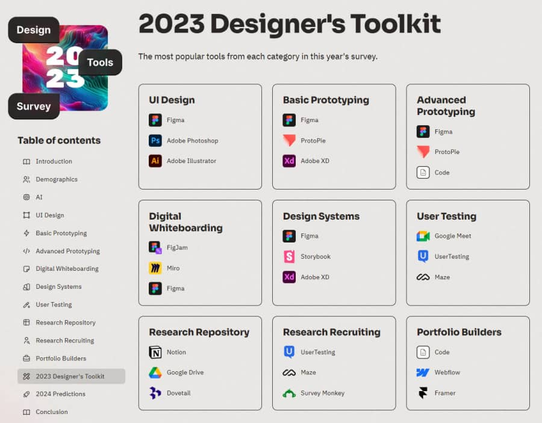
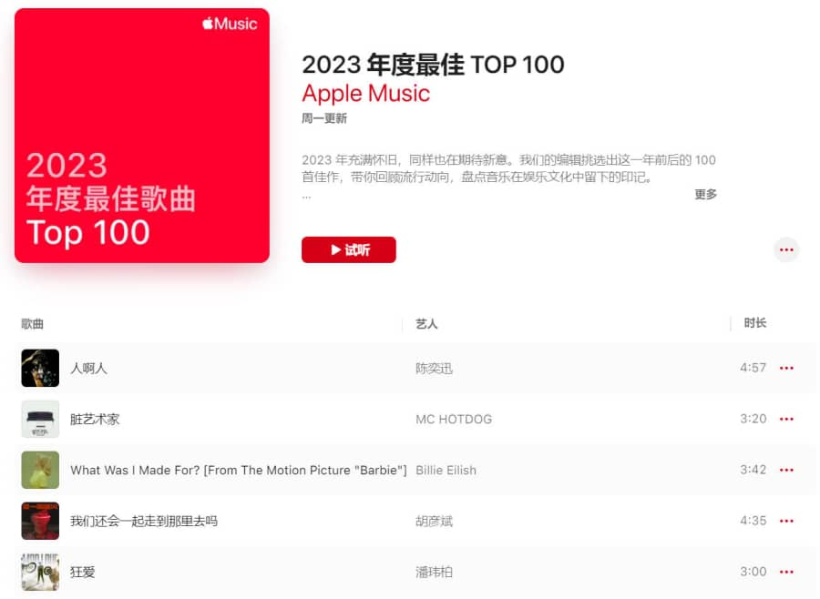
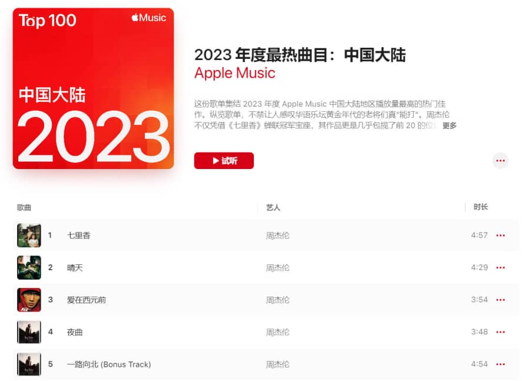
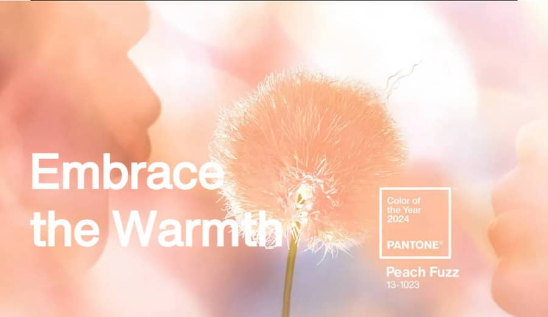

Vol.50：2023 年度统计
Hello，欢迎阅读我的周刊第 50 期。
又到年底了，各大领域都公布了年度榜单，本期主要分享 2023 设计工具、游戏、音乐榜单，和 2024 年度代表色。
2023 UI 设计工具统计
毫不意外，Figma 还是占据 UI 设计工具榜首；比较意外的是今年参与调查的人员中，中国的人数在第五位；很意外的是 Sketch 竟然排在了 Photoshop 和 Illustrator 的后面。今年还新增了 AI 的使用调查。

2023 TGA 年度游戏
12 月 8 日，The Game Awards 年度游戏投票结果出炉。《博德之门 3》获奖最多，并评为了年度游戏，《塞尔达传说：王国之泪》提名很多，但最终获得的是最佳动作/冒险游戏。
部分结果如下：
- 年度游戏：《博德之门 3》
- 最佳独立游戏：《星之海》
- 最佳初次亮相独立游戏：《Cocoon》
- 最佳手游：《崩坏：星穹铁道》
- 最佳动作游戏：《装甲核心 6》
- 最佳动作/冒险游戏：《塞尔达传说：王国之泪》
- 最佳多人游戏：《博德之门 3》
2023 苹果音乐榜单
年度最佳

年度最热（中国大陆）
年度最热歌曲，周杰伦的歌仍然占了大部分，前 20 首有 19 首都是他的，虽然我不怎么听，但还是不禁感叹，他太能打了。

2024 年度代表色——柔和桃
潘通这周发布了 2024 年的代表色，是柔和桃 (PANTONE 13-1023 Peach Fuzz)。官方解释柔和桃体现了我们培育自己和他人的愿望。这是一种天鹅绒般柔和的桃色色调，其包罗万象的精神丰富了思想、身体和灵魂。
潘通色彩研究所执行董事是这样说的：
“为了寻找一种能够呼应我们对亲密和联系的内在渴望的色调，我们选择了一种散发着温暖和现代优雅气息的颜色。一种与同情心产生共鸣的色调，提供触觉拥抱，毫不费力地在青春与永恒之间架起桥梁。”

订阅： 本站所有内容首发于 tangweijuan.com，支持 RSS 订阅，同步更新于微信公众号「Afterwork Time」，欢迎扫描下方二维码订阅。

发布于:
2023/12/8